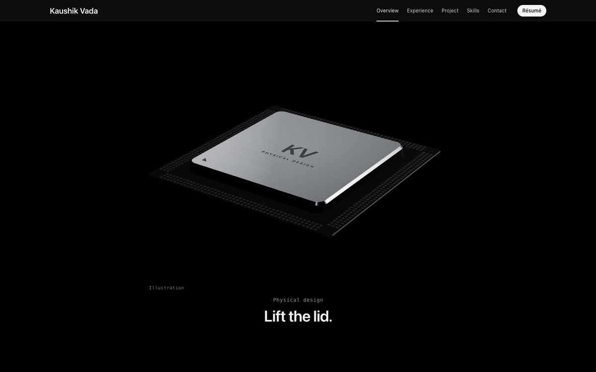
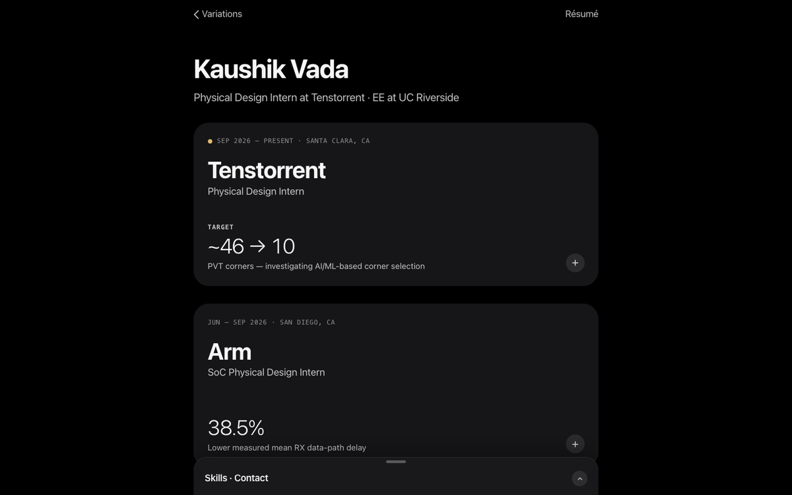
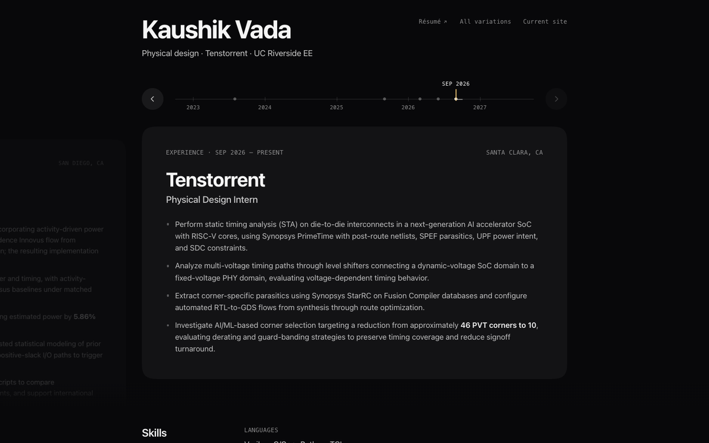
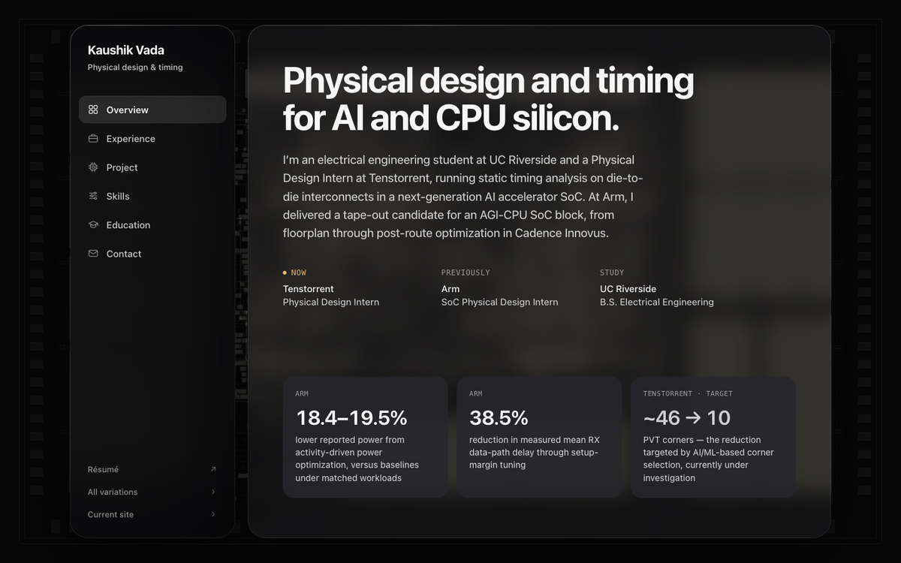

Keynote
01
Keynote
A product-launch page. A KV chip lifts its lid and builds itself from RTL to GDS as you scroll; the Arm and Tenstorrent numbers are the heroes.
Open
Sheets
02
Sheets
A native-feeling app. Cards expand in place and drag down to dismiss; skills live in a sheet with detents you can fling.
Open
Flick
03
Flick
The career as a timeline you throw. Drag back in time, or scrub the ruler — it lands where your gesture was going.
Open
Glass
04
Glass
Spatial windows floating over a floorplanned die. Materials carry the hierarchy; panels grow toward your pointer.
Open